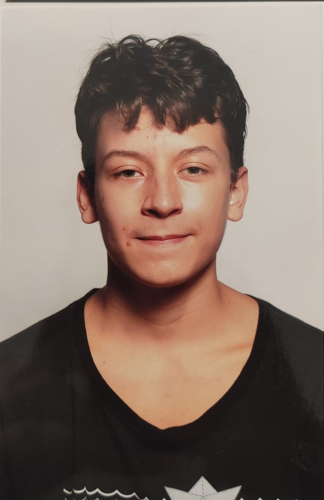

Prénom : Gabriel
Nom : Dahan
Date de naissance : 30 Juillet 2005 - 30/07/2005
Contact : work@gabrieldahan.me
| Lycée Charlemagne | ||
|---|---|---|
| 2nde | 1ère | Tale |
| 2020-2021 | 2021-2022 | 2022-2023 |
| Tronc commun | Mathématiques, Physique Chimie et NSI | Mathématiques et NSI + Math. Expertes |
Website : gabrieldahan.me